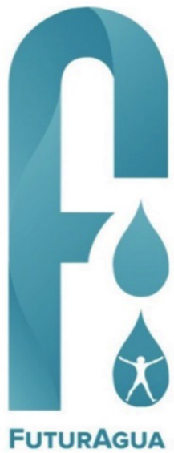
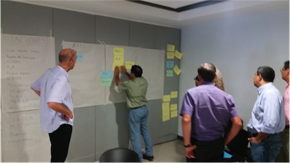
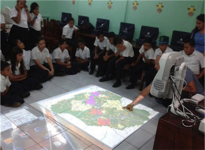
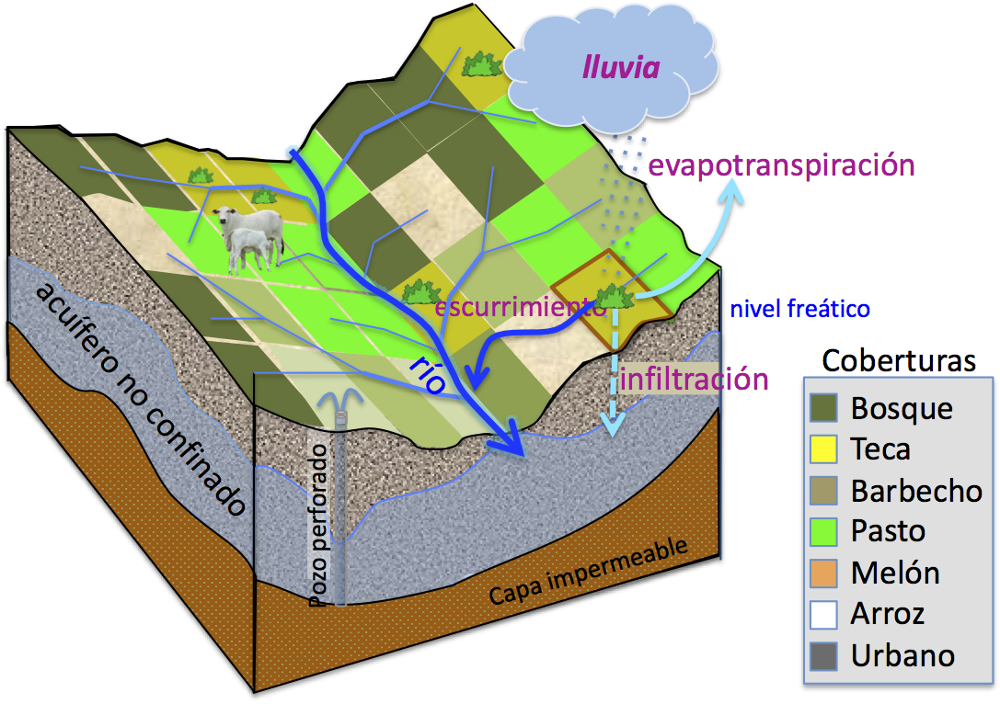
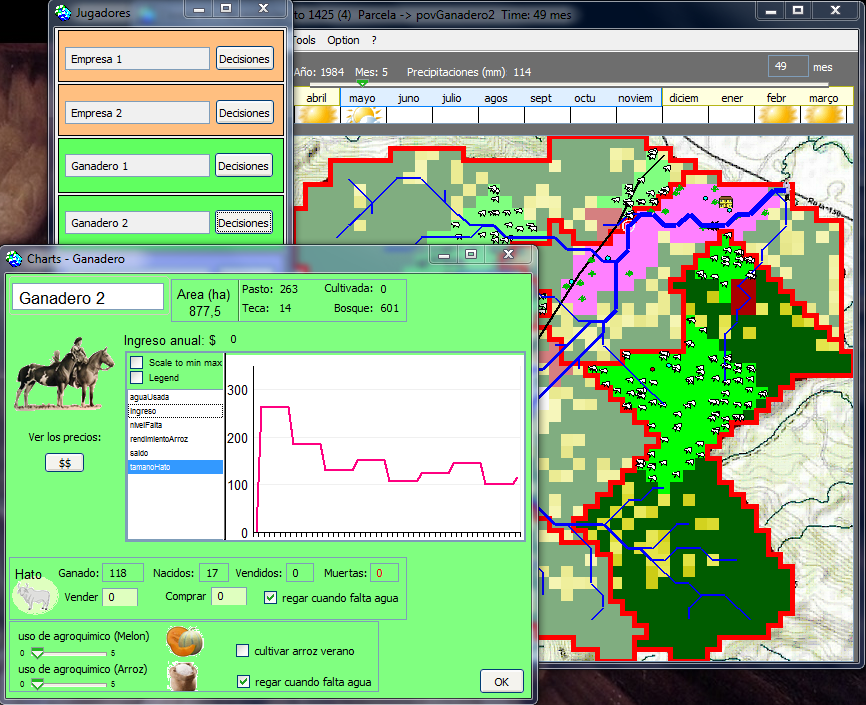
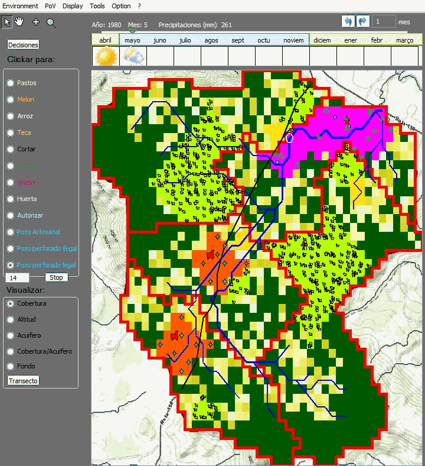
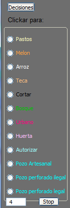
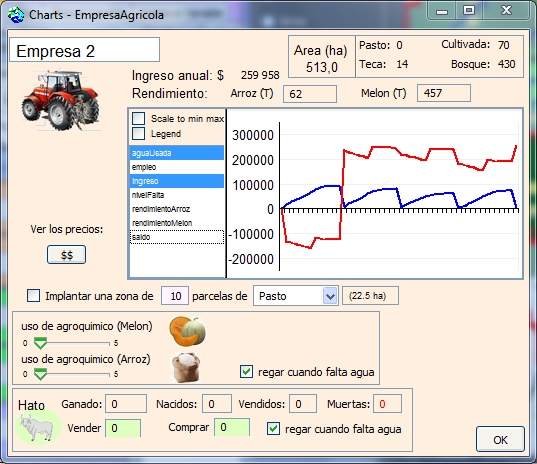
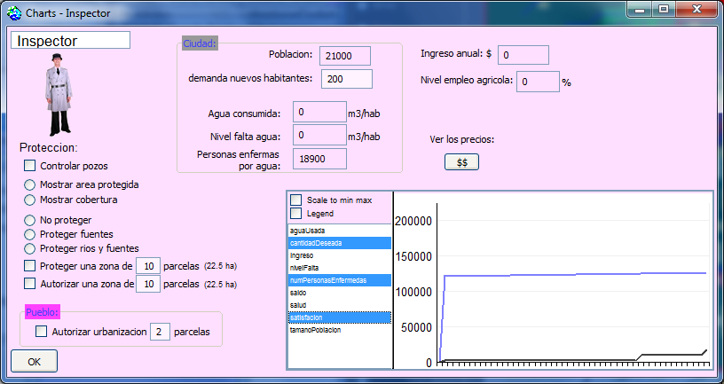

Este modelo híbrido está desarrollado en el marco del
proyecto
FuturAgua:
un proyecto de investigación-acción financiado por el
Forum Belmont y ANR.
Motivación

El
proyecto FuturAgua
se implemento en Guanacaste, Costa Rica, entre
setiembre de 2013 y noviembre de 2017, con el
objetivo de ayudar a tomar mejores decisiones
sobre el uso del agua para que las comunidades
estén preparadas para periodos de escasez de agua
en esta región propensa en sequías.
El enfoque de FuturAgua fue en la generación de
información sobre el estado actual y futuro del
agua en la región, y en desarrollar herramientas
para apoyar a los gobiernos locales y comunidades
en la toma de decisiones sobre el uso y el manejo
del agua. Es decir, buscó construir y generar
información útil para mejorar la seguridad del
agua en Guanacaste.
Con el fin de involucrar a los actores de la comunidad
para mejorar la resiliencia a la sequía y reducir las
disputas por el agua en la cuenca Potrero-Caimital, en
Nicoya, así como sensibilizar a la población acerca de
la gestión del agua, se desarrollo un proceso
participativo que resulto en el diseño colectivo de un
modelo informático. "ContaMiCuenca" es un
simulador interactivo que funciona como un juego. El
nombre del modelo híbrido, "ContaMiCuenca" es un juego
de palabras con un triple significado: "Cuéntame mi
cuenca"; "Contaminación de la cuenca"; y "Cuenta conmigo
en la cuenca [cogestión]". Su nombre refuerza el uso del
modelo como herramienta de frontera para la comunicación
y la comprensión de la complejidad hidrológica de la
cuenca.
Los actores locales definieron que ContaMiCuenca
debe abordar dos temas principales: (i) el riesgo de
contaminación de las aguas subterráneas con
agroquímicos; y (ii) la reducción de la disponibilidad
de agua, para las necesidades básicas humanas y la
producción agrícola.


Foto: una sesión de diseño colectivo del
modelo (utilizando el método ARDI)
Una sesión del juego con alumnos de la
escuela de Curime.
Descripción y características del modelo
Red
hidrográfica de la cuenco Potrero-Caimital
La
cuenca Potrero está dividida en parcelas
de 2,25 ha (150 x 150 m2) y también en áreas
de actividad. Dependiendo de la altitud de cada
parcela, una red hidrográfica recibe el agua de
lluvia y la drena hasta la salida. Pero una parte del
agua se infiltra en el suelo (dependiendo del tipo de
cobertura) y alimenta el acuífero. El modelo
también calcula los movimientos del agua subterránea.
Además, el modelo no sólo toma en cuenta las cantidades
de agua, sino también la calidad al considerar las
concentraciones de contaminantes químicos y
orgánicos.

Los agentes
El modelo tiene 6 agentes repartidos en 4 tipos:
2 administradores de una industria agrícola; el
presidente del aldea; 2 agricultores ganaderos; y el
inspector de la ciudad (ya que la ciudad no está ubicada
en la cuenca hidrográfica, no se visualiza en la
interfaz de simulación). Cada agente está a cargo de un
área determinada: una área de actividad compuesta por
parcelas.
ContaMiCuenca es un modelo híbrido en el
sentido de que permite a los usuarios interactuar con la
simulación. Así, en cualquier momento, un jugador puede
abrir su interfaz de decisión. Puede definir su
estrategia para los próximos meses. Por ejemplo, un
agricultor puede decidir abrir nuevos pastizales, vender
o comprar vacas y perforar nuevos pozos. A continuación,
debe definir dónde se ubicarán sus decisiones en su área
de actividad.

Estructura del modelo
El diagrama de clases UML siguiente muestra la estructura
general del modelo:
Dinámica temporal
La dinámica del agua es la siguiente: cada mes, la cuenca
recibe una cierta cantidad de agua de lluvia (de acuerdo a
10 años de datos de lluvia del área de estudio). Cada
parcela aumenta su volumen de agua superficial por esta
agua de lluvia, luego pierde una cantidad de agua por
evapotranspiración y por consumo directo por la cubertura
vegetal. Una parte del agua restante se envía al acuífero
(infiltración) y la otra al río (escorrentía).
Cada mes, la vegetación crece, dependiendo de la cantidad
de agua disponible en el suelo. Los cultivos pueden
recibir fertilizantes (decisión del agricultor) que pueden
aumentar los rendimientos en más o menos medida. Cada
semestre, los cultivos son cosechados y vendidos. Al
consumir hierba, las vacas también tienen una dinámica de
reproducción, pero también de decrecimiento si falta agua
o si los pastos se degradan.
La empresa agrícola siembra arroz al comienzo de la
temporada de lluvias y melones en la temporada seca. Cada
jugador también puede abrir nuevas parcelas para implantar
pasto o teca.
Implementación
El modelo multi-agente, desarrollado en la plataforma
CORMAS, puede simular los efectos a corto y largo plazo de
la gestión del agua, en base a un paso temporal mensual.
Uso del modelo
Al inicio de una simulación, se abre automáticamente un
mapa de la cuenca del Potrero. Muestra la distribución
de la vegetación así como la ubicación de las áreas de
actividad de cada jugador. El sistema hidrográfico
también es visible. Dependiendo de las precipitaciones y
del nivel del acuífero, los caudales de los ríos pueden
fluctuar, lo que se percibe por el tamaño de los ríos.

Se solicita al usuario de elegir un nombre y un
agente-avatar.
En cualquier momento, un jugador puede conocer su estado
abriendo su interfaz de decisión donde aparecen las curvas
de indicadores (dinero, agua consumida, rendimientos,
etc.).



En cualquier momento, los jugadores pueden conocer los
costos, necesidades y beneficios esperados de cada
actividad: